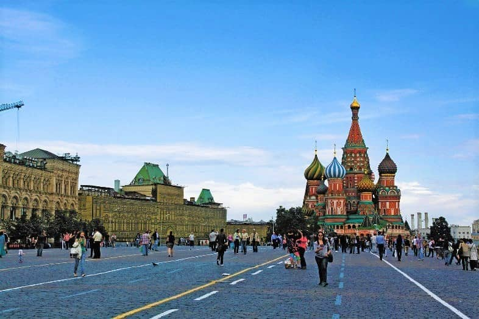
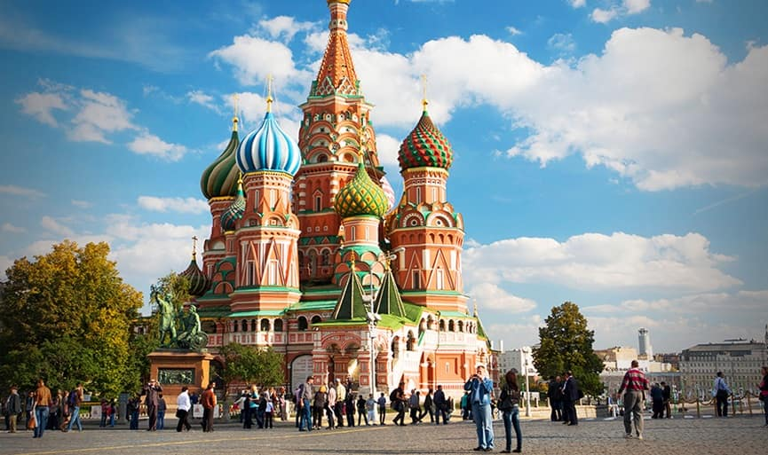
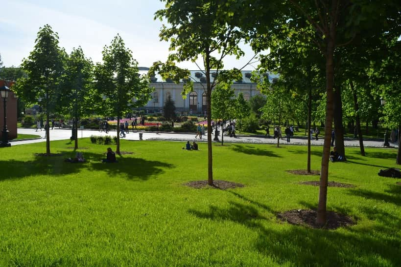
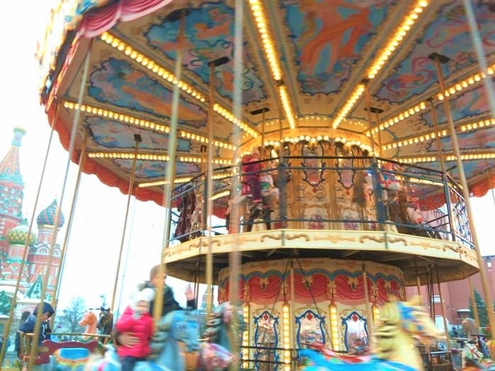

الميدان الأحمر

الميدان الأحمر Red square هو أحد أشهر الميادين شعبية عند السياحة في روسيا ، يأخذ الميدان شكل المُربع ويقع بين سوق تجاري تاريخي شهير في موسكو يُطلق عليه (كيتاي جورود)، وبين قصر الكرملن.
الميدان يقع في قلب مدينة موسكو لذا يسهل الوصول إليه من جميع الاتجاهات والطُرق السريعة المؤدية من العاصمة وإليها
يُعد الميدان واحدًا من أبرز الاماكن السياحية في روسيا وتقام فيه الاحتفالات المُختلفة بغض النظر عن أغراضها، سواء كانت عسكرية دينية سياسية أو ترفيهية حيث يتجمع به بشكل دائم الآلاف من الشعب الروسي والسياح الذين يحبون رؤية المباني الجميلة هناك
عند زيارتك إلى موسكو سوف تُلاحظ روعة المباني الحمراء التي تُحيط بالميدان والذي أخذ تسميته منها، كُل هذه الأبنية تُمثل تاريخ الإتحاد السوفيتي وهي باقية كما هي مُنذ مئات السنين وحتى عصرنا الحالي
افضل الانشطة في الميدان الأحمر موسكو
يُجسد الميدان الأحمر تاريخ وحاضر واحدة من أهم عواصم العالم وهي موسكو، لذلك عند زيارتك له سوف تستمتع بالذهاب في جولة قديمة حديثة بين أبرز وأجمل الميادين والمباني المطلة عليه

الجلوس والتمتع بالحدائق والمنتزهات المطلة على الميدان وقضاء أوقات غاية في الجمال والمتعة في الهواء الطلق بين الأشجار المحلية المعمرة، والتمتع بدفء جو المدينة وأشعة الشمس الذهبية واستكشاف المدينة وعادات وتقاليد الزوار والسكان المحليين

ينتشر في محيط الميدان وبقربه العديد من الأماكن الترفيهية والملاهي المناسبة لأطفالكم يمكنكم مشاركتهم أجمل الأوقات الحميمة

الميدان محاط بالعديد من الأماكن السياحية المهمة في العاصمة موسكو يمكنكم زيارتها والتعرف عليها عن قرب والاستمتاع بالتعرف على تاريخ روسيا والاتحاد السوفييتي سابقًا وهو مكان يضج بالاحتفالات والعروض الفنية الثقافية وكذا العروض العسكرية ستحبون الوقوف ومشاهدتها
إذا كنتم من هواة التصوير الفوتوغرافي أو المهتمين بالتأكيد لن تكفو عن التقاط الصور الفوتوغرافية الجميلة التي لن تروا مثلها في اي مكان آخر حيث المباني القديمة والعراقة والحداثة منسجمان معًا